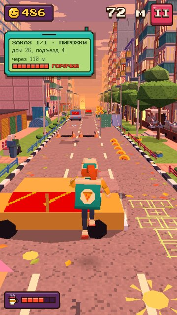

Курьер Раш: Доставка на районе
Доставь всё горячим — район ждёт!
- Раннер
- Пиксельные 90-е
- Без интернета
- Бесплатно
- 6+
Пицца ещё дымится, а до подъезда четыреста метров! Беги вместе с курьером Дашей по пиксельному району 90-х: панельки, лавочки с бабушками, ларёк «Продукты 24», голуби и коты на подоконниках. Доставка на районе — это ты.
Перепрыгивай люки и шлагбаумы, ныряй под бельё на верёвке и уворачивайся от машин, которые выезжают из арок. Подхвати заказ у окошка кафе и влети в светящийся коврик у нужного подъезда — «Доставлено!». Чем горячее заказ, тем больше чаевые.

- ←влево
- →вправо
- ↑прыжок
- ↓подкат
Что в игре
- 🏃Свободная смена и 300 маршрутовБесконечный бег на рекорд и «Маршруты» в 10 районах.
- 🌇Утро, закат и неоновая ночьПрямо во время забега, дождь осенью и снег под Новый год.
- 🛴ТранспортСамокат, складной велосипед, ролики, мопед, тележка из магазина, скейт и самодельный ракетный велосипед.
- 🐕Пёс БарбосБежит следом — ему просто пахнет пицца.
- 🚌Автобус на остановкеЛавируй между пассажирами, а иногда заказ ждёт прямо у дверей.
- ☕УсилителиКофе, магнит для чаевых и пружинные кеды.
- 🎒ГардеробШесть образов Даши и рюкзаки разных цветов.
- 🏡«Мой двор»Качели, голубятня, гирлянды — а соседи, которым ты возишь заказы, выходят во двор с подарками.
- 🎄Праздники по календарюНовый год, 8 Марта, осень и лето — свои заказы, задания и сувениры во двор.
- ⭐Маршрут дня и рангиЕжедневные задания и ранги от стажёра до легенды района.
10 районов:
- родной двор
- улица Тополиная
- рынок
- стройка
- парк с прудом
- вокзал
- частный сектор
- промзона
- новогодний район
- центр ночью
Никто никогда не страдает: Даша падает на рюкзак, как жук на спинку, и снова в путь. Игра работает без интернета, на русском и английском.